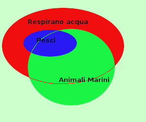
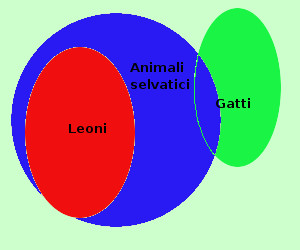

|
Anche qui vediamo un giudizio vero ed uno falso Dimostriamo la validita' (o meno) del sillogismo: 
mediante i diagrammi di Eulero-Venn L'insieme dei pesci e deglii animali marini hanno elementi in comune (vero) l'insieme degli animali marini ha elementi comuni coll'insieme degli animali che respirano acqua (vero) quindi otteniamo la figura a destra ed il ragionamento e' valido avendo l'insieme degli animali che repirano acqua e l'insieme dei pesci degli elementi comuni (l'insieme dei pesci e' addirittura contenuto nell'insieme degli animali che respirano acqua) Vediamo anche un esempio di sillogismo non valido: 
nessun leone e' un gatto significa: { gatti }∩{ leoni } = Ø qualche gatto e' un animale selvatico significa: { gatti } ∩ { animale selvatico } ≠ ∅ Nessun animale selvatico e' un leone significa { animale selvatico } ∩ { leone } = Ø falso e siccome gli animali selvatici e l'insieme dei leoni hanno elementi comuni il ragionamento e' falso mediante i diagrammi di Eulero-Venn i 3 giudizi dicono: L'insieme dei leoni non ha elementi comuni con l'insieme dei gatti vero L'insieme dei gatti ha qualche elemento in comune con l'insieme degli animali selvatici vero L'insieme degli leoni e l'insieme degli animali selvatici non hanno elementi in comune falso Otteniamo la figura a destra ed il ragionamento non e' valido non essendo l'insieme degli animali seivatici e l'insieme dei leoni disgiunti |